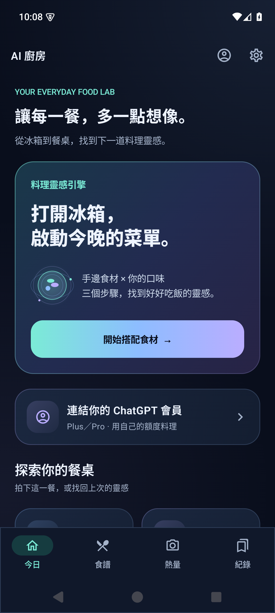
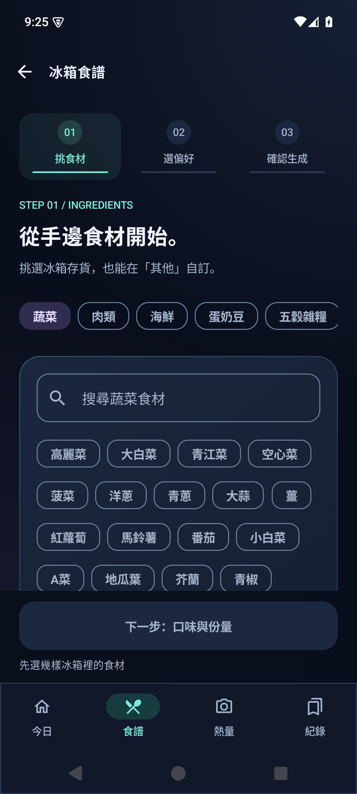
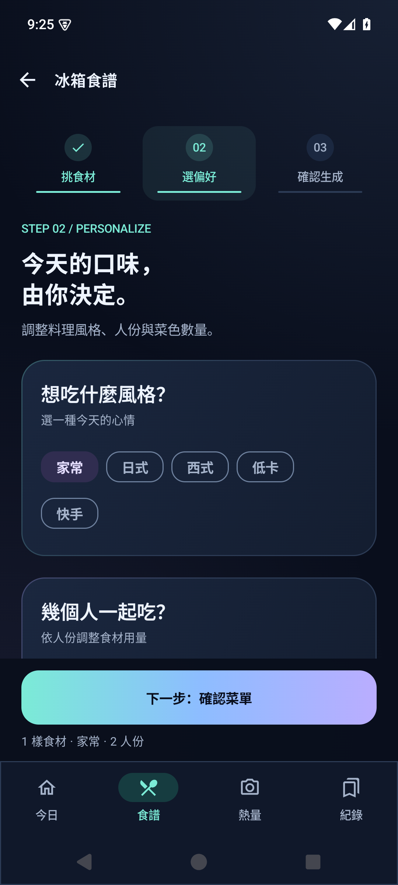
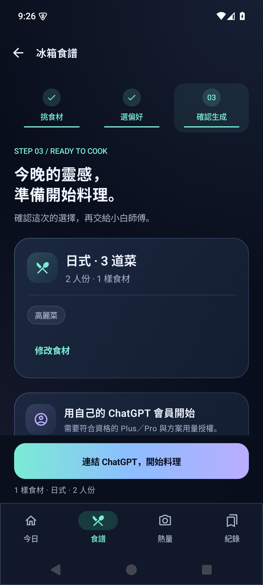
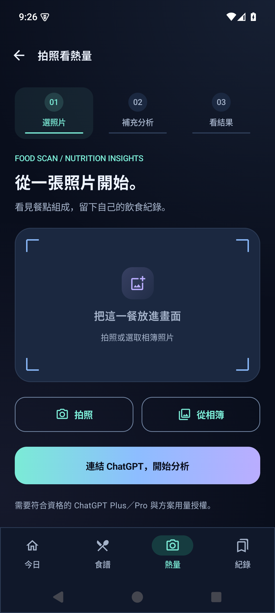

冰箱剩下的食材能煮什麼？
在 Android 手機選食材、選偏好，用 AI 生成食譜，讓今晚的菜單慢慢成形。
Android 8.0 以上 · v0.9.2 · 12.2 MB · 2026/10/13
iPhone / iPad 無法安裝 · 版本說明與備用下載
APP 免費；AI 需要符合資格的 ChatGPT Plus／Pro 與方案用量授權。
Free 帳號目前不支援此整合，仍受帳號與模型用量限制。

AI 廚房（Chef AI Toolbox）是一款 Android 料理助理：用現有食材整理食譜、拍照估算餐點營養，再把完成的內容收進手機料理本。
新版以深藍底、青綠到紫色的漸層和柔和光暈，搭配分步引導，把選食材、口味與確認菜單拆成清楚的三個階段。可以回頭修改，切換頁面也保留這次的選擇。
使用自己的 ChatGPT 會員，在官方登入頁授權後回到 APP，無需複製 API Key。APP 本身免費，ChatGPT 訂閱另計；目前這條整合需要符合資格的 Plus／Pro 與方案用量授權，可用模型及額度依帳號實際結果為準。
以下為 v0.9.1 的實際介面截圖，v0.9.2 沿用此設計。食材與偏好為示範操作；點擊圖片可以放大。




| 作業系統 | Android 8.0（API 26）以上 |
| iOS 支援 | 不支援（iPhone / iPad 無法安裝） |
| 目前版本 | v0.9.2 · 2026/10/13 |
| 檔案大小 | 12.2 MB（APK） |
| 網路 | AI、會員登入與檢查更新需要網路；本機紀錄可離線回看 |
| 權限 | 拍照時使用相機；相簿使用系統照片選取器；更新通知可選擇允許 |
| AI 帳號 | 符合資格的 ChatGPT Plus／Pro，並允許使用方案用量；Free 目前不支援此整合 |
| 費用 | APP 免費；ChatGPT 訂閱另計，依帳號實際額度與模型限制使用 |
v0.9.2 修正部分裝置收到回應卻無法讀取食譜串流的問題，改善錯誤提示，沿用新版漸層介面與三步料理流程。已在 MSI 保留既有登入並收到食譜文字；完整保存、真人照片分析與各廠牌相機仍持續實機驗收。
支援更新功能的版本會在開啟時檢查新版，背景約每 12 小時檢查，實際時間由 Android 安排。Android 13 以上可在設定允許更新通知；也能隨時手動檢查，未允許通知仍可在 APP 內看到更新提示。
更新以 GitHub 的正式 Release 與 APK 為準，推送原始碼不會直接通知。收到提示後開啟版本頁下載、覆蓋安裝；較舊、沒有更新功能的版本，請從這個頁面手動下載。
Android 8.0+ · v0.9.2 · 12.2 MB
版本說明、SHA-256 與備用下載